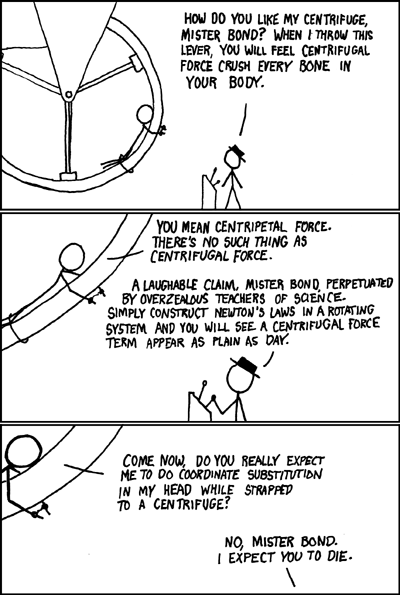
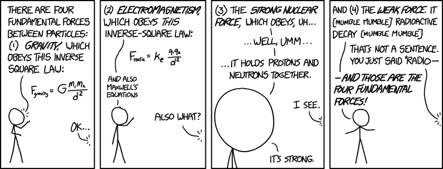
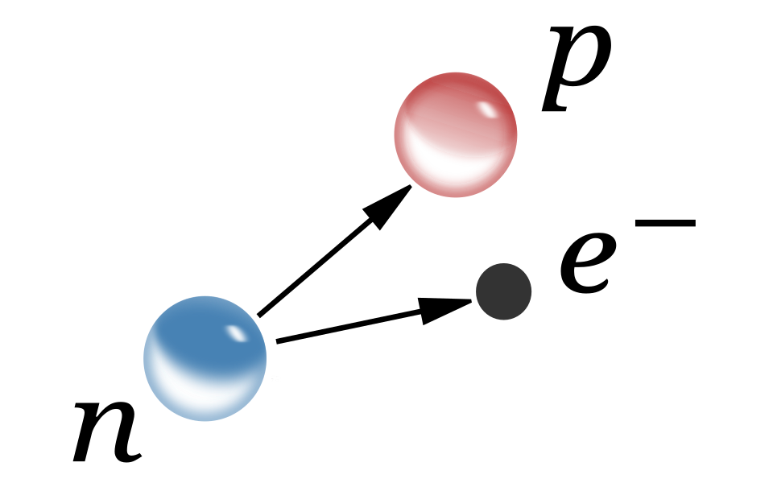
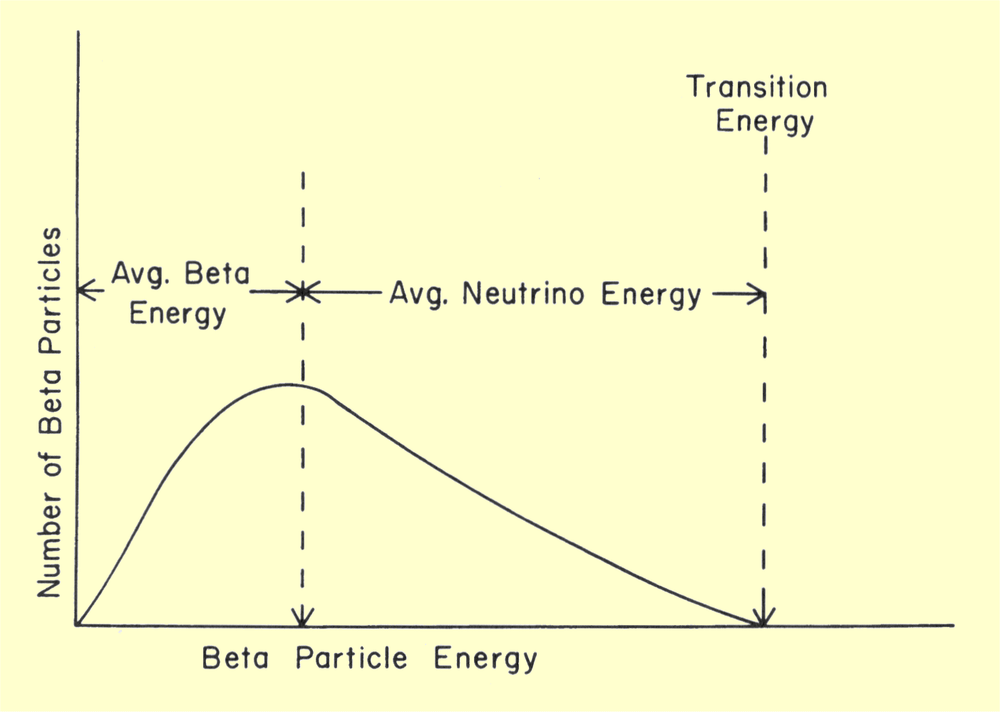
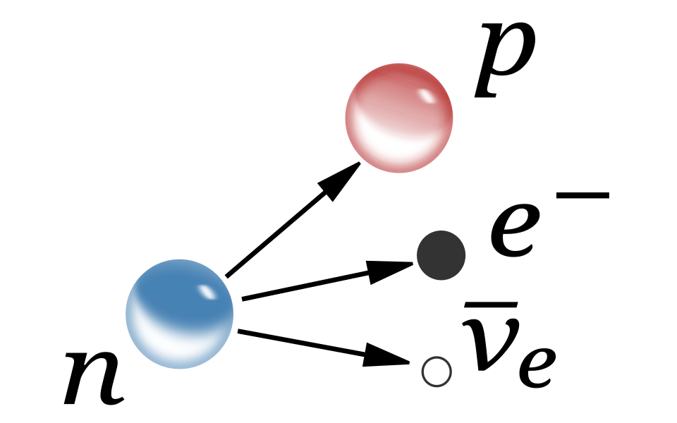

Reading: Chapter 14, 15, 16, 17
- Recap Sun as a star
- Recap 4 fundamental forces
The four "fundamental" forces
Forces defined by the second law of dynamics as the causes of changes in momentum (\(\mathbf{F}=m\mathbf{a}=d\mathbf{p}/dt\)), and they are a central concept of classical and non-relativistic physics
N.B.: in quantum mechanics and relativity forces are mathematically less easy to manipulate and a description of nature in the form of conserved quantities such as energy, momentum, etc. is more manageable).
We have already encountered several forces to construct physical models of astronomical objects – however not all forces are "ontologically" the same!
Apparent forces: manifestation of a non-inertial reference frame
Some forces, such as the centrifugal force or the Coriolis force are apparent: they arise in non-inertial frames (e.g., a rotating frame) as a consequence of the fact that the frame itself is accelerating.
Example: while you are going around a corner in your car, you may feel pushed towards the outer-edge of the curve. This is because implicitly you are considering the car as your reference frame, which is turning ⇔ accelerating to change the velocity direction ⇔ non-inertial. From the point of view of an inertial frame (e.g., a tree on the side of the road), there is a centripetal force (the friction between the wheels and the road, pointing towards the center of the curve) that is forcing the car to turn, but that force does not act on you directly, so you feel the car turning "under you" and perceive it as you being pushed to the exterior.
Note that the fact these forces are apparent just means we can find a reference frame where they are not there (and usually the math simplifies, so these are preferable), but it doesn't mean the effect of these forces is not real: you do move around relative to your car when you turn!

"Non-fundamental" forces
These are forces that we introduce as a simplified model of something more complex, that is they are an effective model for something more fundamental.
Example: The friction between the tires and the car! Friction is caused by electromagnetic interactions between the atoms/molecules of the tires and the asphalt, but we don't want to have to deal with an extremely large number of molecules and calculate one-by-one all their interactions: we can instead define some parameter (the coefficient of friction) and calibrate it empirically to describe the change in momentum of bodies "touching".
The concept of "touching", or in other words contact forces, itself is an effective non-fundamental force: at microscopic level we are made of atoms and molecules which are mostly empty. What we perceive as a contact force is the electromagnetic repulsion between our mostly empty component!
"Fundamental" forces
The 19th and 20th century physics research was in large part influenced by positivism, and searching for a "grand unification" of all forces, that is a single theoretical framework that would explain all causes of changes of momentum.
Electromagnetic force
This started with James Clerk Maxwell, who unified electricity and magnetism into electromagnetism, showing that one can be the source of the other, and which you get depends on the reference frame used to describe the phenomena (much like centrifugal vs. centripetal force depend on the reference frame). The electromagnetic force is mediated by photons: photons in classical mechanics are electromagnetic waves, and exchange of photons allows for electromagnetic interactions between charged particles.
Strong (nuclear) force
Another fundamental force is the nuclear force, also called strong force because it is much stronger than electromagnetism, although it only works at very short distances (of the order of 10-15 m, the typical size of a nucleus). This is what enables nuclear reactions in stars, if \(T\) is high enough that collisions bring nuclei close enough, the electromagnetic repulsion loses to the nuclear force and they can bind together. At particle-level it is mediated by gluons.
Gravity
Gravity is instead much weaker than electromagnetic forces, which allows solids to bind together without collapsing under their own weight. It is the first fundamental force studied by Newton, and it remains irreducible to other forces still today.
N.B.: The most modern theory of gravity that fits all the experimental constraints that we have, General relativity, considers gravity a manifestation of the intrinsic "shape" of space-time bent by masses! We do not yet have a quantum theory of gravity, so at particle level there is a theoretical particle, the graviton which can be constructed by analogy with other particles.
N.B.: The unification of gravity, for which the current best theory is general relativity, which is a classical (as opposed to quantum) theory, with quantum mechanics is a capstone problem for modern physics.
Weak force
The last "fundamental" force is the electroweak force, or simply weak force. This is weak respect to the strong, electromagnetic, and gravitational forces, and usually involves changes in flavor of leptonic particles (electrons, muon, and tau particles, differing in mass but all with the same charge), which produce neutrinos.

All other forces that appear in physics are effective models that can be explained in terms of these 4 forces, and many people still work on trying to finding a unifying framework for all these fours to reduce the number of fundamental forces.
N.B.: This is an example of a reductionist approach, trying to explain all phenomena with as few pieces as possible. 20th century discoveries such as deterministic chaos, emergent phenomena in complex system, non-linear systems also have revealed that often complex physical systems (e.g., the atmosphere of a planet, or a star, etc.) are not just the sum of their parts and reductionist approaches risk missing interesting and relevant phenomenology.
Solar neutrinos
We have encountered neutrinos in discussing the Sun's energy generation. These particles are the smoking gun of the weak force. Neutrinos are subatomic particles first theoretically predicted by Wolfgang Pauli in the 1930s based on the fact that in the decay of neutrons \(n\rightarrow p +e^{-}\) energy was apparently not conserved.


N.B.: the half-life of a free neutron \(n\) is about 15 minutes, and they decay into protons, electron and an anti-neutrino \(\bar{\nu}\) to conserve charge, energy, and leptonic number. This spontaneous decay mediated by the weak force does not occur has easily for neutrons bound in nuclei.
Instead of abandoning the principle of conservation energy, Pauli proposed that the decay of the neutron produced not 2 but 3 particles: \(n\rightarrow p+e^{-} +\bar{\nu}\) with the third being hard to detect.

However, in the mid-50s, neutrinos produced by a nuclear power-plant were detected by Cowan and Reines: the proximity to the source made the neutrino flux sufficiently high (∼1012-1013 neutrinos s-1 cm-2). Since then, neutrinos from astrophysical sources (stars, stellar explosions, and jets) and have been detected, at various energies, and provide information complementary to photons since they hardly interact with matter.
On Earth, the main source of neutrinos is the Sun: by measuring their energy, we could even recently directly confirm specific nuclear reactions occurring in the Sun's interior, strongly and directly confirming the picture of energy generation we have discussed above.
Typically, since neutrinos interact so little with matter, to detect them one needs a lot of matter to maximize the chances of an interaction. Historically this was done by filling underground abandoned mines. In the late 60s, Davis detected the flux of neutrinos from the Sun, but it was 1/3 of the predicted neutrino flux! This was dubbed the "missing solar neutrino problem", and initially the community thought either the theoretical prediction or the experimental apparatus were wrong.
N.B.: Because science is a collective enterprise, there is a sociology of science and the community decides collectively what are the important problems to work on. This per se is not a scientific (quantitative, based on empirical evidence) process, but it shapes the way scientific communities work. To learn more about this aspect, I highly recommend "History of Scientific Revolutions" by Thomas Kuhn.
For decades, this problem remained open: the experiment was repeated and the result confirmed, the theoretical predictions were double checked, with nothing pointing to errors. Ultimately, the solution required understanding neutrinos beyond the predictions of the standard model! Astrophysics pushed us beyond the standard model of particle physics.
The key are neutrino oscillations: in nature there are three species of neutrinos (electron, lepton, and muon) corresponding to the three leptons (electron, and its more massive "cousins" muon and tau particles). The neutrino-producing processes in a star like the Sun preferentially produce electron-flavor neutrinos (N.B.: "flavor" is the real technical term!), which are also the easiest to detect, and the predictions were based on this fact.
However, it turns out that the standard model of particle physics (built on quantum mechanics and decades of experiments in particle accelerators) is missing a key piece: neutrinos can "change flavors" as they travel from the Sun to Earth. By the time they arrive on Earth, about 2/3 of the expected electron neutrinos are going to have switched to muon or tau neutrinos, which the detectors then miss! These neutrino oscillations are the reason why the leptonic number is not a precisely conserved quantity (there is no exact symmetry of nature corresponding, only an approximate gauge symmetry).
Several Nobel prizes have been awarded for the detection of neutrinos, development of the theory on how they interact with matter, their oscillations, and even the The 2026 Nobel prize in physics to Francis Halzen was awarded for the development of neutrino detectors which require 1 km3 of ice to work!
Other experiments use large volumes of sea water, or huge tanks of water polluted with elements that are more likely to react with neutrinos deep in mines (e.g., at the famous Kamiokande mines in Japan).
Stellar evolution
Mass is what matters most to determine the life of a star
- binaries
- self-regulated burning